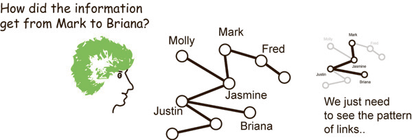
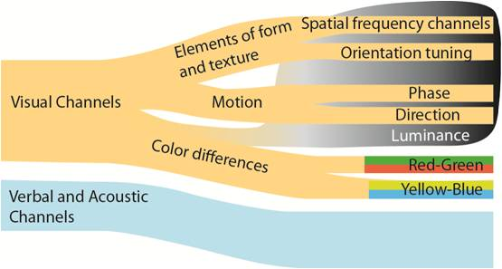

|
VTDP: Visual Query
Visual queries are components of all visual thinking algorithms. They are cognitive constructs. In a visual query, problem components are identified that have potential solutions based on avisual pattern search. To initiate a visual query, a pattern is cognitively specified, that if found in the display will contribute to the solution of a problem.
Example 1: In the task for finding how information may have been transfered between individuals using a social network diagram. The first visual queries will be to locate the nodes representing individuals. The final visual query will be to discover if there is a path between those nodes.

Example 2: With a weather map visualization base on a model of the wind patterns, visual basic queries will be constructed to discover the temperature, pressure, wind speed, etc at particular locations. More complex visual queries may be formulated to identify features such as weather fronts and low pressure areas. Still more complex queries will relate these features to the behavior of the jet stream.
A cognititively efficient design is one in which all the common and important visual queries can be efficiently executed and this should guide the mapping of the data to its graphical representation.
Constructing and executing a visual query
Display Environment: A graphic display containing elements representing data.
- Problem components that have solutions based on visual pattern discovery are identified. These are formulated into visual query patterns sufficient to discriminate between anticipated patterns.
- The low level visual system is tuned to be sensitive to the query pattern. Visual information from the display is processed into a set of feature space maps weighted according to the search pattern. A visual scanning strategy is activated based on prior knowledge, display gist and the task.
- An eye movement is made to the next best target location based on the feature space map, scene gist and prior knowledge regarding the likely locations of targets.
- Within the fixation, search targets are processed serially at approximately 40 ms per item. Patterns and objects are formed as transitory nexii from proto-object and proto-pattern space. These are tested against the visual query pattern.
- Repeat from 4 as needed.
5.1 Only a simple description of object or pattern components is retained in visual working memory from one fixation to the next. These object nexii also contain links to verbal-propositional information in verbal working memory.
5.2 A small number of cognitive markers may be placed in a working memory spatial map of the display space to hold task relevant information when necessary.
|
The problem of what makes a pattern easy to find is not simple. The bulk of the book Information Visualization: Perception for Design is devoted to this topic [1]. Some of the basic issues are summarized below.
The efficiency of visual search is determined by four things.
A-priori salience: Some patterns are inherently salient and almost impossible to ignore. These include blinking lights and a single brighly colored symbol where all other symbols are grey.
Task driven salience: When we search for a pattern, for example red lines denoting highways on a road map, our low level perceptual machinery is re-tuned to make this kind of information stand out more strongly. The corrolary is that patterns we are not looking for will be often missed even though we may be looking right at them. This is a very strong effect and in complex displays task driven salience is a more important determinant of what is seen than a-priori salience.
Both task driven and a-priori salience are determined mostly by low level features on a single perceptual channel as shown in the diagram below. Complex compound patterns are not salient unless they differ from surrounding objects on a single feature dimension. This diagram can be used to design for salient. Simply, to make something salient it should differ strongly from all other objects on one of these channels. For example if only one object is red and all the others are neutral grey, it will be salient. Alternatively, if one object moves and all the others are static, it will be salient.

Knowledge: Visual searching is a skill. If we are familiar with a particular kind of visualization our previous experience will guide where we look depending on the particular cognitive task.
Spatial working memory: In some complex visualization with few visual landmarks it can be hard to remember where we have already looked. Spatial working memory holds information about where we have previously looked for only two or three previous fixations. In some cases externalization support (e.g. allowing the user to mark searched areas) can increase search efficiency.
Implementation Guidelines: In generall determining relative salience is a complex design problem involving tradeoffs. Ware (2012) has more than 200 specific guidelines meant to assist the designer in creating preceptually efficient visualizations. However, the guidelines only a starting point. It is up to the designer to determine which kinds of pattern should most strongly support visual search based on a detailed task analsys.
We offer one specific guideline here: The most strongly salient cues should be reserved for interactive highlighting methods, such as brushing or degree of relevance hightlighting. This is because interactive methods are cognitive task driven and if the set of things that is relevant can be selected by an algorithm making them very salient will be a benefit, not an irritation. What is highlighted should ideally be what we need at the next instant in a successful implennntation.
[1] Ware, C. (2012) Information Visualization: Perception for Design. 3rd Edition. Morgan Kaufman.
|